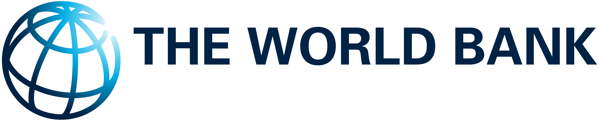
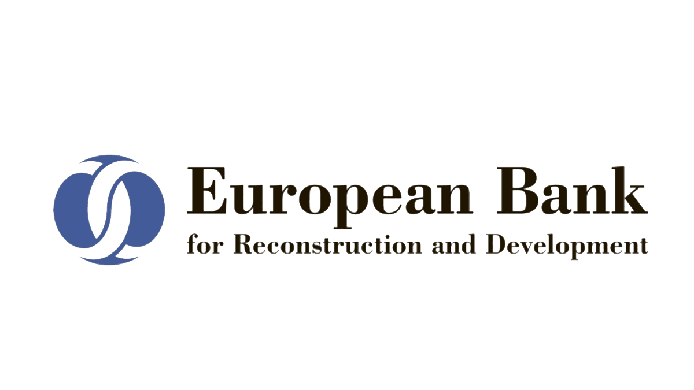

Сопровождение сложных инфраструктурных проектов от структурирования контракта до разрешения споров.
BRIDGE CONSULT — независимая консалтинговая компания, специализирующаяся на контрактном инжиниринге, администрировании строительных контрактов и разрешении споров в международных инфраструктурных проектах.
Компания предоставляет экспертную поддержку клиентам из государственного сектора, международным финансовым институтам, инвесторам и подрядчикам в реализации масштабных инфраструктурных проектов, включая проекты, финансируемые международными банками развития.
Компания основана в 2016 году и зарегистрирована в Республике Узбекистан.
Миссия Bridge Consult — поддержка успешной реализации международных инфраструктурных проектов посредством профессионального контрактного инжиниринга, эффективного управления строительными контрактами и применения современных механизмов разрешения споров.
Мы стремимся обеспечить прозрачность, правовую надежность и эффективное управление рисками на всех этапах жизненного цикла проекта путем интеграции передового международного опыта, стандартов FIDIC и глубокой экспертизы в области управления контрактами и проектами.
Наша цель — создание надежной правовой и управленческой основы для сотрудничества между государственным сектором, международными финансовыми институтами, инвесторами и подрядчиками.
Bridge Consult предоставляет консультационные услуги в международных инфраструктурных проектах.
Интеграция лучших мировых практик урегулирования споров в реальные условия проектов.
Международная федерация инженеров-консультантов (FIDIC) предоставляет золотой стандарт типовых контрактов. Мы обладаем глубокой экспертизой в применении:
Глубокое понимание проформ FIDIC, EPC-контрактов и жестких требований МФИ.
Интеграция международных контрактов в правовое поле РУз без потери их юридической силы.
Защита интересов клиента на всех уровнях: от сметного аудита до представительства в арбитраже.

Строительство современных спортивных объектов для проведения IV Летних Азиатских юношеских игр в г. Ташкенте.

Разработка и внедрение системы закупок и управления контрактами для инфраструктурных проектов по модели EPC+F.

Реконструкция 107 км автомобильных дорог 4R105 и 4R100. Заказчик: Азербайджанская компания.

Транспортный коридор ЦАРЭС 2. Заказчик: АО EVRASCON.
Янгиюль и Жийдакапа
Реконструкция систем водоснабжения. Финансирование: World Bank, EBRD. FIDIC Yellow Book.
Наманган
Водоснабжение северной части города (трубопровод 60.07 км). Финансирование: OPEC Fund.
Самаркандская область
Строительство водозаборов. Финансирование: АБР.
Фундамент BRIDGE CONSULT — это уникальный опыт наших специалистов. Мы объединили профессионалов с десятилетиями практики в инженерном деле, юриспруденции и международном арбитраже.

Инфраструктурные контракты | FIDIC | EPC | Международный арбитраж
Профессиональная аккредитация и консультационная деятельность:

Международный арбитраж | Институциональные реформы | Регулирование цифровой экономики
Профессиональная аккредитация и консультационная деятельность:
Профессиональная практика включает:

Ведущий специалист по контрактам FIDIC | Управление инфраструктурными проектами
Эрнест Белоусов — эксперт в области управления международными строительными контрактами, специализирующийся на сопровождении сложных инфраструктурных проектов. Обладая глубокими компетенциями в работе с проформами FIDIC (Red, Yellow, Silver Books), Эрнест обеспечивает эффективное администрирование контрактов, профессиональное управление претензиями (Claims Management) и строгое соблюдение международных инженерных стандартов.

Сметное дело | Оценка стоимости | Тендерная документация
Люция Шамильевна Ахмедиева имеет более чем 40-летний опыт работы в области контроля объемов и технического управления в строительной отрасли Узбекистана. Ее профессиональный опыт включает подготовку тендерной, проектной и сметной документации, ведомостей объемов работ (BoQ), оценку стоимости и контроль бюджета крупных инфраструктурных проектов.
Она также участвовала в проверке объемов работ, оптимизации затрат, администрировании контрактов и технической поддержке при разрешении контрактных вопросов и претензий, включая проекты, связанные со строительством участков стратегических автомагистралей в Узбекистане.

Системы качества в строительстве | Сертификация материалов | ISO 9001
Более 50 лет опыта работы в строительном инжиниринге и управлении качеством. Участие в крупномасштабных инфраструктурных проектах, финансируемых международными финансовыми институтами, включая Азиатский банк развития (АБР) и Всемирный банк.
Профессиональная деятельность в области обеспечения качества, сертификации материалов и контроля соответствия в строительных и инфраструктурных проектов.
Сертифицированный специалист по сертификации строительных материалов и системам менеджмента качества. Сертифицированный аудитор систем менеджмента качества ISO 9001:2015.
Руководитель компании обладает статусом Аккредитованного АБР контрактного менеджера и специалиста по разрешению споров. Bridge Consult имеет успешный опыт работы с проектами, финансируемыми Всемирным Банком, ЕБРР, АБР и Фондом ОПЕК. Эксперты компании регулярно модерируют сессии по использования Советов по урегулированию споров (DBs) в проектах МФИ и проводят сертифицированные обучающие программы.



Свяжитесь с нами для предварительной оценки вашего запроса.